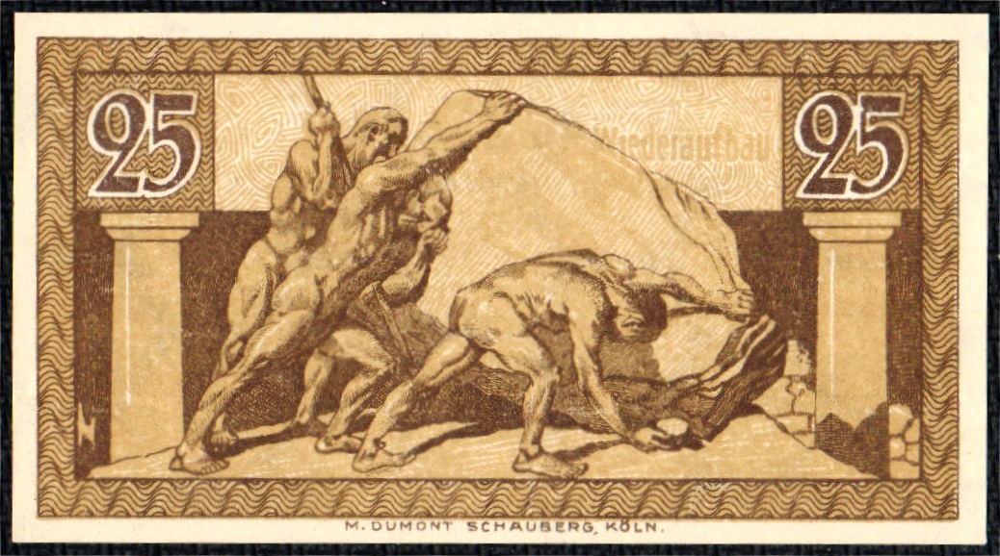
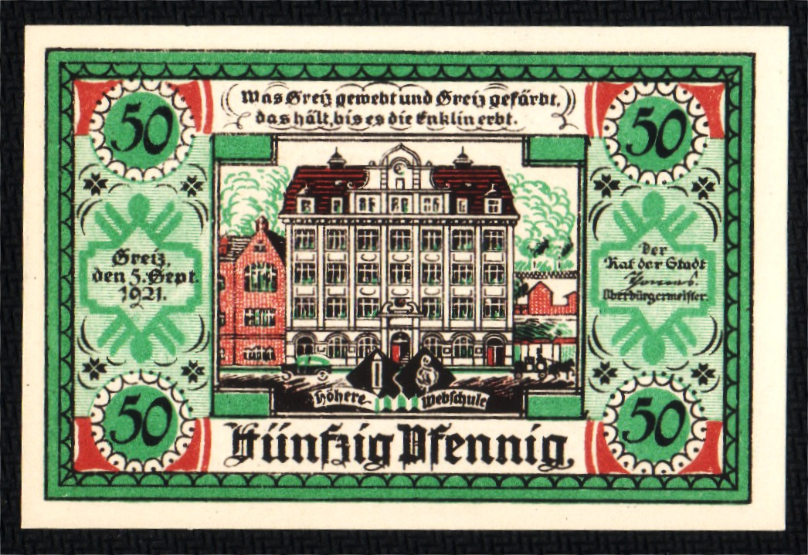
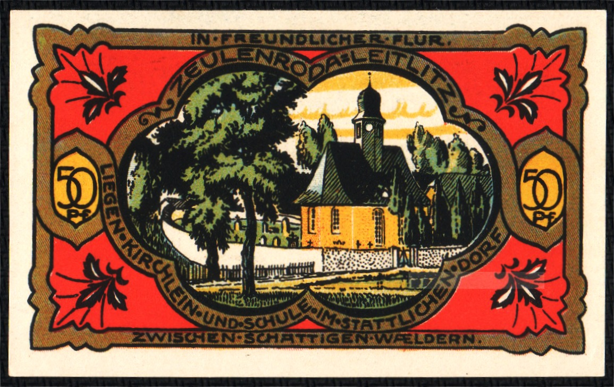
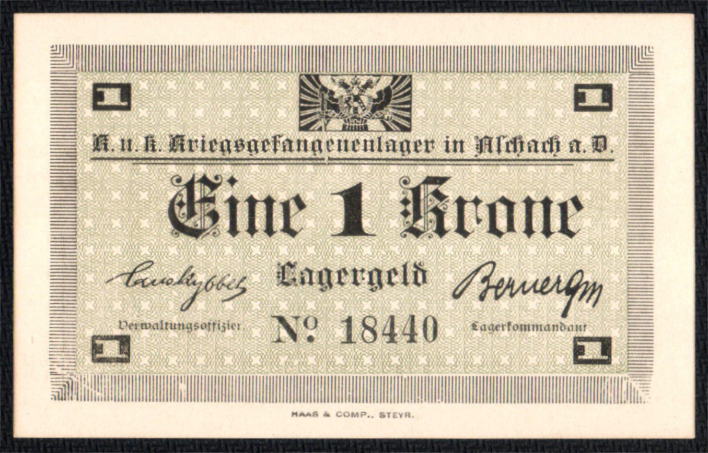

Front 926 (Ahrweiler, 1921; GrM: 7.3-2/2)
Front 923 (Altenkirchen, 1921; GrM: undetermined)
Front 943 (Altenkirchen, 1921; GrM: 24.1b-1/3)
Front 936 (Blumenthal, 1921; Gra: 0123.1a-3/3)
Front 940 (Bonn, 1920; Gra: B74.6b)
Front 907 (Frose in Anhalt, 1921; GrM: 398.5)

Front 942 (Fürstenberg in Mecklenburg, 1921; GrM: 0402.9-5/7)
Front 925 (Fürstenwalde, 1921; GrM: 403.1a-12/15)

Front 924 (Greiz, 1921; GrM: 0471.2-2/4)
Front 909 (Groß Nordende, 1921; GrM: 0484.1a-3/4)

Front 941 (Hagenow, 1921; GrM: 500.1a-2/4)
Front 903 (Halberstadt, 1921; GrM: 504.2b-3/6)

Front 904 (Halberstadt, 1921; GrM: 504.2b-6/6)
Front 908 (Haltern, 1921; GrM: 0514.1a-3/3)

Front 913 (Hamburg, 1921; GrM: 563.1b-1/3)

Front 919 (Hamburg, 1923; Gra: 10HAM.24b)

Front 937 (Hamburg, 1921; GrM: 539.2d-2/3)
Front 927 (Harzgerode, 1921; GrM: 582.4-1/3)
Front 930 (Heessen bei Eilsen, 1921; GrM: 587.1-2/3)
Front 922 (Herne, 1921; GrM: 0602.1-4/10)
Front 915 (Hofgeismar, 1922; GrM: 0619.2-4/5)

Front 938 (Kiel, 1918; Gra: K22.5)
Front 906 (Langewiesen1, 921; GrM: 772.1a-3/4)
Front 920 (Meura, 1921; Gra: 886.1b-2/2)
Front 916 (Mühlhausen i. Th., 1921; GrM: 905.1a-1/5)
Front 918 (Mühlhausen i. Th., 1921; GrM: 905.1a-5/5)
Front 921 (Mülsen-St. Jacob, 1921; GrM: 0906.1-6/8)
Front 917 (Naumburg an der Saale, 1920; GrM: 0928.4a-12/12)
Front 910 (Norden, 1921; Gra: N52.8)
Front 935 (Oldenburg i. O., 1921; GrM: 1017.1b-5/6)
Front 934 (Schleswig, 1920; Gra: 533.7)
Front 939 (Siegburg, 1921; GrM: 1225.3-1/2)
Front 902 (Stedesand, 1920; GrM: 1259.1b-2a/2)

Front 901 (Stuttgart, 1921; GrM: 1290.1b-2/6)

Front 928 (Treffurt, 1921; GrM: 1338.2-1/6)

Front 929 (Treffurt, 1921; GrM: 1338.2-2/6)
Front 911 (Wilhelmsburg, 1921; GrM: 1429.1-5/5)
Front 914 (Wilhelmsburg, 1921; Gra: 1429.1-2/5)

Front 905 (Winsen a. d. Luhe, 1921; GrM: 1434.2a-2/2)

Front 944 (Winsen a. d. Luhe, 1921; GrM: 1434.1a-1/2)
Front 912 (Zeulenroda, 1920; Gra: Z8.9)
Front 931 (Zeulenroda, 1921; GrM: 1470.2-1/10)
Front 932 (Zeulenroda, 1921; GrM: 1470.2-2/10)

Front 933 (Zeulenroda, 1921; GrM: 1470.2-4/10)

Back 926 (Ahrweiler, 1921; GrM: 7.3-2/2)

Back 923 (Altenkirchen, 1921; GrM: undetermined)
Back 943 (Altenkirchen, 1921; GrM: 24.1b-1/3)
Back 936 (Blumenthal, 1921; Gra: 0123.1a-3/3)
Back 940 (Bonn, 1920; Gra: B74.6b)

Back 907 (Frose in Anhalt, 1921; GrM: 398.5)

Back 942 (Fürstenberg in Mecklenburg, 1921; GrM: 0402.9-5/7)
Back 925 (Fürstenwalde, 1921; GrM: 403.1a-12/15)
Back 924 (Greiz, 1921; GrM: 0471.2-2/4)

Back 909 (Groß Nordende, 1921; GrM: 0484.1a-3/4)

Back 941 (Hagenow, 1921; GrM: 500.1a-2/4)
Back 903 (Halberstadt, 1921; GrM: 504.2b-3/6)

Back 904 (Halberstadt, 1921; GrM: 504.2b-6/6)
Back 908 (Haltern, 1921; GrM: 0514.1a-3/3)
Back 913 (Hamburg, 1921; GrM: 563.1b-1/3)
Back 919 (Hamburg, 1923; Gra: 10HAM.24b)
Back 937 (Hamburg, 1921; GrM: 539.2d-2/3)

Back 927 (Harzgerode, 1921; GrM: 582.4-1/3)

Back 930 (Heessen bei Eilsen, 1921; GrM: 587.1-2/3)
Back 922 (Hern, 1921; GrM: 0602.1-4/10)

Back 915 (Hofgeismar, 1922; GrM: 0619.2-4/5)
Back 938 (Kiel, 1918; Gra: K22.5)
Back 906 (Langewiesen1, 921; GrM: 772.1a-3/4)
Back 920 (Meura, 1921; Gra: 886.1b-2/2)

Back 916 (Mühlhausen i. Th., 1921; GrM: 905.1a-1/5)

Back 918 (Mühlhausen i. Th., 1921; GrM: 905.1a-5/5)

Back 921 (Mülsen-St. Jacob, 1921; GrM: 0906.1-6/8)

Back 917 (Naumburg an der Saale, 1920; GrM: 0928.4a-12/12)
Back 910 (Norden, 1921; Gra: N52.8)

Back 935 (Oldenburg i. O., 1921; GrM: 1017.1b-5/6)
Back 934 (Schleswig, 1920; Gra: 533.7)
Back 939 (Siegburg, 1921; GrM: 1225.3-1/2)
Back 902 (Stedesand, 1920; GrM: 1259.1b-2a/2)

Back 901 (Stuttgart, 1921; GrM: 1290.1b-2/6)
Back 928 (Treffurt, 1921; GrM: 1338.2-1/6)
Back 929 (Treffurt, 1921; GrM: 1338.2-2/6)

Back 911 (Wilhelmsburg, 1921; GrM: 1429.1-5/5)

Back 914 (Wilhelmsburg, 1921; Gra: 1429.1-2/5)

Back 905 (Winsen a. d. Luhe, 1921; Gra: 1434.2a-2/2)
Back 944 (Winsen a. d. Luhe, 1921; Gra: 1434.2a-2/2)
Back 912 (Zeulenroda, 1920; Gra: Z8.9)
Back 931 (Zeulenroda, 1921; GrM: 1470.2-1/10)

Back 932 (Zeulenroda, 1921; GrM: 1470.2-2/10)

Back 933 (Zeulenroda, 1921; GrM: 1470.2-4/10)
Front 556 (Federal States - Oberösterreich, 1921; GP-S121)
Front 564 (Grödig, 1918; JPR: 292-10)
Front 586a (POW camp / Lagergeld, 1916)

Front 586b (POW camp / Lagergeld, 1916)
Front 568 (Wien, 1920)
Front 555 (Wien, 1919)
Back 556 (Federal States - Oberösterreich, 1921; P-S121)
Back 564 (Grödig, 1918; JPR: 292-10)
Back 586a (POW camp / Lagergeld, 1916)
Back 586b (POW camp / Lagergeld, 1916)
Back 568 (Wien, 1920)
Back 555 (Wien, 1919)